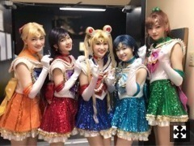
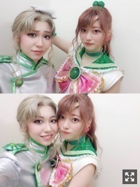
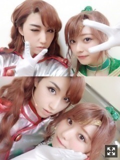
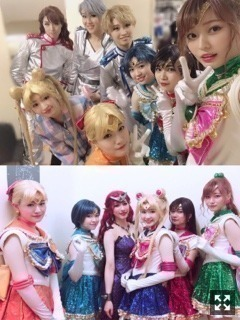
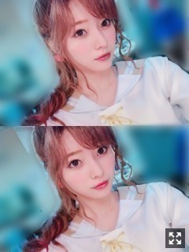

乃木坂46版 ミュージカル「美少女戦士セーラームーン」！千秋楽を迎えてから１週間経った今でも毎日舞台に立ってる夢を見る！それくらい私にとって大切な時間でした！まだ９月にもあるけど！
みなさまこんにちは！！
乃木坂46 ３期生の
梅澤美波です！！
今日は文字ばかりですごめんね！( .. )
６／２４ に千秋楽を迎えました！
(私たちTeamSTARは２２日ですが☺︎)
乃木坂46版 ミュージカル「美少女戦士セーラームーン」
ご来場いただいた皆様、
本当にありがとうございました！
更新するのが遅くなりました(；；)
書きたいことが多すぎて
時間がかかってしまいました、、
千秋楽を迎えてから
１週間以上経ちましたが
終わってしまった今は
寂しさがすごくて
心にぽっかり穴が空いた様な感覚( .. )
それくらい毎日が楽しくて
刺激を受けて
私自身すごく成長できる期間であり
宝物がとても増えた時間でした！
９月にまだあるとはいえ
しばしのお別れ。
稽古ではたくさん悩み
色んなことに苦戦して
力不足な自分に悔しいって思うことも
たくさんありました( .. )
初めてのWキャストにも戸惑いながら
先輩方から、キャスト皆さんから、
たくさんの刺激を受け
稽古に望む毎日でした！
稽古のはじめの方は
楽しいっていう感情を忘れてしまっていたかもしれないです
１番大切なのに( .. )
それくらい必死で不安で仕方がなかった( .. )
でも、そんな私が今
１週間経った今でも
頭の中はセラミュだらけで
早くみんなとまたお芝居がしたい、
会いたいって思えるのは
このカンパニーの皆さんだったからだなって思います☺︎
タキシード仮面さま、ベリルさま、
四天王の
クンツァイト、ネフライト、
ゾイサイト、ジェダイト、
なるちゃん、海野、ルナ、
そして歌もダンスもお芝居も
なんでもオールマイティにこなす
かっこよくて尊敬する
アンサンブルの皆さん、
ステージには一緒に立てなかったけど
稽古からたくさん支えてくださった
アンダーの皆さん、
このミュージカルを作り上げてくださった優しくて暖かいスタッフの皆さん、
本当にみんな大好き(；；)
キャストの皆さんのこと、
１度１人ずつ文章に書いたのだけど
本当に本当に長すぎたから心に閉まっておきます(；；)（笑）
この人達と一緒だったから頑張れた！
さゆさん！
セーラームーン、月野うさぎちゃん！
井上さんがうさぎちゃんだったことが
今回私にとって１番大きかった気がします。
井上さんの演技に対する熱量、
お芝居が本当に大好きなんだなって思う演技に対する姿勢、
本読みの時から圧倒されて
井上さんがいたら大丈夫、
なんて思ってしまいました。
けど、だからこそ
頼りっきりになったらダメだなって。
本当に物凄く負担を
かけてしまっていたと思います、、
色々背負わせてしまったと思います(；；)
舞台経験が豊富だけど、
前に立って指示する訳ではなく、
常に私たちと同じラインに立ってくれて
同じ目線で一緒に作品を作ってくれた。
そんな井上さんが本当に大好き！
井上さん演じる
うさぎちゃんの儚さが
私たちの心をすごく動かしてくれた！
井上さんとお芝居ができていることが
私はとっても幸せです☺︎
みりあさん！
セーラーマーキュリー、水野亜美ちゃん！
みりあさんのお芝居がすごく大好き！
みりあさんとは
似てる部分がすごく多いんです！
好きなものも、気持ちの面でも。☺︎
同じ服持ってたり同じこと考えてたり。
だから何でも話せたし、
この期間すごく助けられたし、
みりあさんがいたから私は毎日頑張れた！
私の気持ちを読み取る天才！（笑）
みりあさんはすごく努力家なんです。
お芝居がどんどん素敵になっていくし、
毎日聴いててどんどん良くなる歌声！
ずっと不安って言ってたのも、
そんなものステージでは消えてた。
その姿が本当にかっこよかった！
ステージで見るみりあさんの笑顔が
私は大好きでした☺︎
お互いの出番の前は背中叩きあって。
裏から毎回見ていた
マーキュリーの歌で私はいつも
泣きそうになってたなあ（笑）
蘭世さん！
セーラーマーズ、火野レイちゃん役！
蘭世さんは
セーラームーン愛が強いからこそ、
舞台の上でレイちゃんで在り続けることを
１番に考えていた人だと思います。
舞台を避けてきたって言ってたけど、
この舞台に出れて本当に良かった
って言葉を聞いた時、
私は嬉しくて涙がこぼれそうでした（笑）
気が強いって自分でよく言うけど、
その姿がすごくカッコいいんです。
自分をちゃんと持ってる姿がすごく好き。
私にないものをたくさん持ってる、
だから惹かれる部分が多いのかも！
うめぴよピーナッツって
謎の名前でいつも呼んできたり（笑）
たまに出るデレが大好き。
ステージでの蘭世さんはどこを切り取ってもレイちゃんだった。
女性らしく時にかっこいい！
その姿に蘭世さんとレイちゃんの重なる部分がたくさんあったなあ
かなさん！
セーラーヴィーナス、愛野美奈子役！
かなさんのヴィーナスが
本当に大好きだった。
すごく優しさに包まれてた！
美奈子ちゃんの可愛さもあって、
一人で戦ってきた強さもあって、
みんなを想う優しさが
とにかくすごく滲み出るの。
あのシーンのあの台詞を言う
かなさんが本当に好きで
いつも泣きそうになる。（笑）
楽屋にいるとき、テンションがおかしい私達をそっと見守ってくれる、
でもたまに一緒に思いっ切りふざける、
そしてまとめてくれる。
その姿が本当にヴィーナスだったなって。
ヴィーナスが登場したシーンの興奮が
毎公演本当にすごかった！
みんなを包み込んでくれる花奈ヴィーナスが大好きだった☺︎
こうしてお芝居ができて
本当に良かったです
この５人で本当に良かった！！！
書いてて泣きそうになってきた、
みんなに会いたい(；＿；)
みんなが本当に大好き！！
毎日会いたいくらい、
１日会わないともう寂しい
朝まで台本読みあったり
セーラームーンの鑑賞会したり
ダンスの振りを揃えたり
歌の練習したり
話し合いしたりバカみたいに笑ったり。
待ち受け画面も５人お揃いなの！
唯一３期生だった私を
後輩の壁を感じさせないくらい包み込んでくれる！
みんなが愛おしくて仕方がない。
こんな私を受け入れてくれる
本当に大切な場所！
今までと違う自分でいられる、
全部さらけ出しても受け止めてくれる！

TeamSTAR 大好き〜(；＿；)！
そして能條さん！！
同じ役としていつも稽古から見ていて、
能條さんのまこちゃんは本当に素敵で
物凄くかっこよくて存在感があって
私にWキャストが務まるかなって不安だったけど、
能條さんがいたから
教わったことがたくさんあって、
一緒の役を演じられて
とても嬉しいなって思っています☺︎！
それと能條さんと
ずっとお話したかったから
この機会にお話することも増えて嬉しかった！！(；＿；)
本当にキャストの皆様の愛に包まれ、
スタッフさんの愛に包まれ、
大好きな人達に出逢えて本当に幸せ。
とても暖かい、
このカンパニーが大好きです。
ここで写真をいくつか！

四天王ゾイサイト役、小嶋紗里さん！
演技も歌声も声もすごくすき！
迫力ある歌声にいつも聴き入ってたなあ
さりさんのゾイサイトはめちゃくちゃカッコいいんです！！
立ち姿もどこを切り取っても
いつも綺麗。
さりさんのお顔がすごくタイプ
すごく綺麗で美人さんで
キリッとしてる私が好みのお顔。
ゾイっ！が大好き！

ネフライト役のshinさん！
ネフライトとジュピターの
舞台上で絡むシーンは
とても大切に演じたつもりです、
とても儚く素敵なシーンばかり。
稽古からすごく迷惑をかけてしまった、
だけど、優しく接してくれて
私をいつも助けてくれました。
本番前は必ずぎゅーして
本番に挑んでいました！
「大丈夫だよ。よろしくね」って。
テンパる私を知ってくれてたからこその言葉だったと思います。☺︎
ステージではかっこよく、
普段は優しすぎるほどのshinさん！
私なんかが相手で申し訳なくなるくらい本当に素敵な方なんです。
相手役がshinさんで本当に良かった☺︎

上は本番前の一枚と
下は本番後の一枚！
写真、たくさんあるので
また少しずつ載せていこうかな☺︎
一人一人の作品へ皆への愛が物凄くあって
そしてそれが
毎公演伝わってくるステージの上では、
本当にいつも心が暖かくなりました。
毎日同じ場面で涙が出た、
私だけでなくその場にいたみんなが。
そんな空間が尊すぎて
抱きしめたかった。（笑）
大好きで大切な人達が
たくさんたくさん増えました！
出会えて本当に良かった〜！
長くなりすぎたけど
ここら辺で終わりにします( .. )（笑）
またセラミュのこと書くかも☺︎（笑）
ここから先は
全国ツアー、
そして「七つの大罪 The STAGE」を
私は頑張ります！！
不安で仕方なくて壁にぶつかることも
たくさんあると思うけど
なにより楽しみたいと思います！！
素敵な思い出作りましょう〜！！

まこちゃんありがとう、
また９月に。☺︎
それでは！
また更新します！！
おやすみ！！
久保ちゃんの発表、
ファンの皆さん驚いたと思います。
私も一緒でした、
気持ちはモバメに送ります、
久保〜待ってるよ〜！
Original：https://www.nogizaka46.com/s/n46/diary/detail/45790?ima=4952&cd=MEMBER